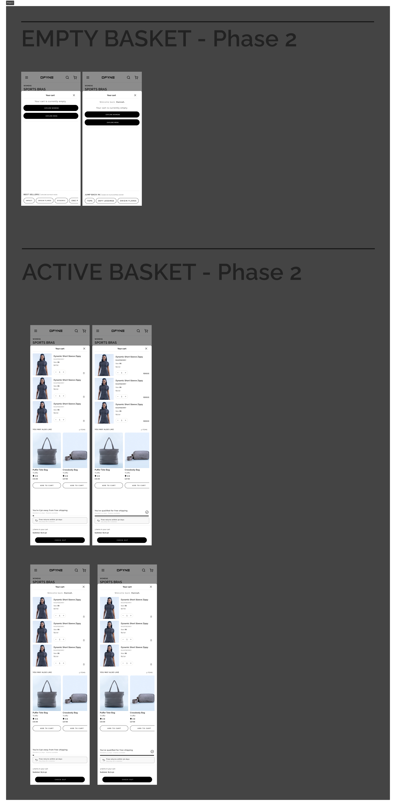
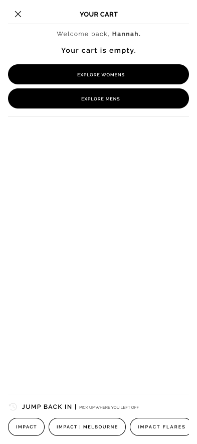
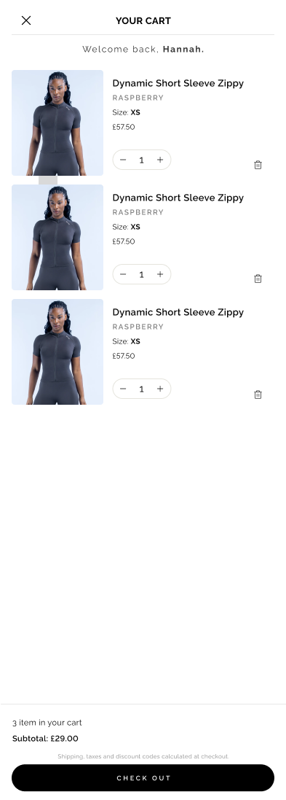

DFYNE · E-commerce
From forced upsell to impulse buy.
A phased redesign of DFYNE's cart. Phase 1 introduces a confidence-signal feedback system into the existing cart; Phase 2 will replace the performance-draining third-party upsell app with a native, exploration-friendly feature — measured against real Shopify conversion data.
- Role · Product / UX Designer
- Platform · Shopify
- Rollout · Phased (Phase 1 of 3)
- Status · Living project, in progress
Executive summary
Executive summary
DFYNE's cart relies on a third-party upsell app that slows the site and pitches products in a way customers find pushy — a double cost of poor performance and poor perception, both dragging on average order value. Phase 1 didn't touch that app yet; it introduced a confidence-signal feedback system (delivery, login, discount status) into the existing cart. A phased rollout de-risked the change: Phase 1 shipped in June 2026, and the first month of Shopify data shows conversion climbing from a 0.67% baseline to 1.89% — validation to move into Phase 2, which replaces the upsell app itself with a native, exploration-first feature.
Background & challenge
An upsell that worked against the sale.
The previous upsell mechanism ran through a third-party app bolted onto the cart. It created real performance bottlenecks, and the recommendations it surfaced felt forced rather than helpful — a bad combination that suppressed both site speed and average order value.
A third-party app degraded site performance and the shopping experience.
No clear exploration of products or purchasing options inside the cart.
Forced, unintuitive upsells hurt perception and engagement alike.

Discovery & research
Four questions users couldn't get answered.
Direct user feedback — an office survey — surfaced the friction directly: shoppers kept hitting the same unanswered questions at the exact moment they were deciding whether to buy.
"Do I qualify for free shipping? How close am I?"
"Am I logged in? Is my account recognized?"
"What discounts am I eligible for? Are they applied?"
"When will this arrive? What are my options?"
The key insight
Most UK customers already meet the free shipping threshold with a single purchase — the bar is exceptionally low. But the cart never told them that. Surfacing a status they'd already earned turns an invisible fact into a powerful conversion signal: positive reinforcement at the exact moment of the purchase decision, not friction.
Design solution
A feedback system, not just a redesign.
Phase 1 introduced small, contextual feedback moments throughout the cart — each one answering a user question in real time, before it became a reason to abandon. The third-party upsell app itself is still live; replacing it is the work of Phase 2.
Clear free-shipping qualification status, shipping timeframes, and eligibility — answered before the user has to ask.
A prominent signal confirming the user is authenticated and their account is recognized.
Clear labeling of applied discounts and total savings — no more wondering if a code worked.
Together, these signals build cart confidence — reducing hesitation and abandonment by addressing objections before they're even formed, and building trust through transparency about status, savings, and delivery.
The third-party upsell app remains live for now. Phase 2 will replace it with a native upsell feature — giving the sales and product teams far better recommendation and conversion tracking, and removing a third-party script that's currently a drag on page load time.
Implementation strategy
Three phases, de-risked on purpose.
A phased rollout limited user confusion and let each release earn the next — validating design decisions with real usage before committing further.
-
Phase 1 — UI redesign & confidence signals Live, June 2026
A UI redesign of the cart, adding a delivery-cost signifier (free shipping status) and light personalization via on-screen username display — the phase measured in this study. The third-party upsell app stayed live throughout.
-
Phase 2 — Native upsell redesign Next
Replaces the third-party upsell app with a native feature — better recommendation and conversion tracking for sales and product, and faster page loads.
-
Phase 3 — Points & loyalty overhaul Potential
Pending stakeholder sign-off: a full overhaul of the logged-in state with a points signifier, integrating the cart with Smile.io's points system.



Phase 3 · the ideal future — designed within real constraints
Left to pursue Phase 3 without constraint, this is the direction I'd push toward: a full points-and-loyalty overhaul of the logged-in cart, with a points signifier surfaced directly against the basket, a "1000 points = £5 off" reward ladder, and a refer-a-friend prompt built into the same moment.
This was designed inside a real business constraint, not just a wishlist: stakeholders believe visible discounts and sale-driven messaging cheapen DFYNE's premium brand positioning. So this concept frames the reward entirely around loyalty and points — never "% off" or "sale" — keeping the incentive but protecting the brand's full-price identity. It's the case I'd bring back to stakeholders, not a shipped decision.
Final interaction states — guest and returning customers





Guest and returning-customer paths were designed as distinct states — personalization and delivery-threshold messaging adapt to who's shopping.
Results & impact — Phase 1, first month
Conversion nearly tripled.
Shopify analytics, pre-launch baseline (May 3, 2026) vs. the month following Phase 1 launch (June 7 – July 7, 2026).
The funnel is moving further, not just adding more in
Of the 237,378 sessions that reached checkout in the measurement window, 78,431 completed — the redesigned cart isn't just drawing more browsing, it's converting more of that browsing into finished orders.
Peak traffic, peak conversion
The strongest single day in the window was July 4 — a promotional/holiday spike of 252,861 sessions converting at 6.3%, nearly 3.3× the period average. The redesigned cart held up, and performed best, under the highest-traffic conditions it will ever see.
Key learnings
Key learnings
Shipping Phase 1 alone already produced a measurable lift — proof the direction is right before Phase 2 and 3 compound it.
Removing the third-party app's technical debt was itself a UX improvement, independent of any visual redesign.
Upsells that feel like discovery, not pressure, are the goal for Phase 2 — Phase 1 already shows that reducing hesitation and building confidence moves conversion on its own.
The July 4 spike validated the new cart under the exact conditions the old app-based version struggled with most.
Next steps
This is a living project.
-
Ship Phase 2 — layer in contextual product recommendation logic, tuned using Phase 1's cart-addition and checkout data.
-
Track AOV directly — add average-order-value reporting alongside conversion so upsell impact is measured, not inferred.
-
Scope Phase 3 (potential) loyalty overhaul — pending stakeholder sign-off, a full redesign of the logged-in state with a points signifier, integrated with Smile.io. Most logged-in loyalty members never see their points balance today; surfacing it extends the same confidence-signal thinking to loyalty engagement and incremental AOV. Not yet implemented — direction to be confirmed with stakeholders.